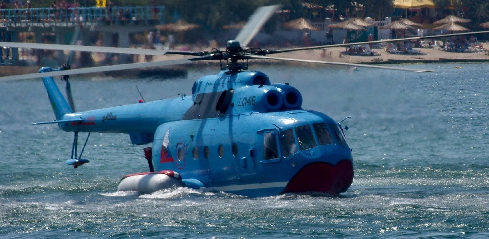

So now that we are done talking about airplane safety protocols, we will be moving on to helicopter safety protocols
so lets start with some general tips for while bording a helicopter that most providers have set to be necessary for there services
HELICOPTER WATER LANDING
Well there isn't much of an evacuation in a helicopter water landing, because most of the time if the helicopter doesn't have fixed or emergency pop out floats the helicopter is just going to flip over and sink. But there are some helicopters that are meant to land in the water, these helicopters are known as amphibious helicopters, here is an image of an amphibious helicopter.

Some times helicopters have life-vests in the helicopter that you can put on right before the helicopter hits the water. Then you can attempt to swim out of the helicopter after it starts to sink.
HELICOPTER CRASH
So when a helicopter crashes on the ground it's more or less a car accident but from a lot higher up. The first thing to do when the helicopter hits the ground is get out of the helicopter as fast as you can, because some times the helicopter can explode after it crashes.
ONBOARD FIRES
Now if there is an onboard fire mid-flight, most helicopters have fire extinguisher onboard and someone would deal with the fire with that. but if it is to big for a fire extinguisher, the helicopter could make an emergency landing and call the fire departement.
OTHER EMERGENCIES
So now just like the 'OTHER EMERGENCIES' part in the plane section, we will be talking about some rather unlikely emergencies in this part. So let's start with if two helicopters crashed into each other, it would just be a car crash but from super high up in the air, once the helicopter hits the ground your main priority is to get out of the helicopter and help others get out to and then call the fire department and medics just incase anyone is hurt.
That is it for the helicopter section, hope you enjoyed the presentation, see you next time!
Now if you want to go to the plane section, here you go.